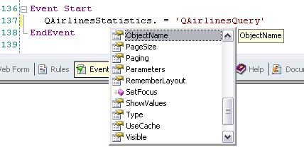

Assigns the Object that is to be encapsulated in a Web Component, SD Component or QueryViewer control. SyntaxXXX.Object Where: DescriptionTo be used on a Web Component or SD Component, it has to be used in conjunction with the Create function or CreateFromURL function. See more information on that documents on how to use it. To Query Viewer, you can set the appropriate object in its properties window, same that for a Web Component control. To assign in runtime a control name for a Query Viewer control, you must to use the "ObjectName" property.  By example: QAirlinesStatistics.ObjectName = 'QAirlinesQuery' where QAirlinesQuery is a Query object and QAirlinesStatistics is a Web Panel containing the control. Scope
See also
|
| Backlinks | |||
| Create function | |||
| Refresh command in web | SD Component control | Web Component control | Web Component Control Properties |
| WebWrapper data type |